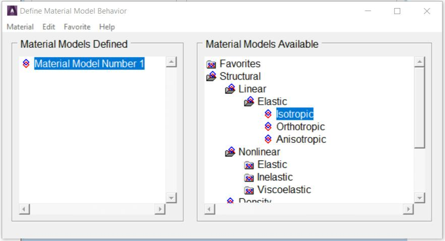

2 ANSYS OPERATIONS
2.1 Getting Started
There are three basic choices (Fig. 2.1) to start ANSYS from the
Windows Start Menu.
Fig. 2.1 Three basic choices to start ANSYS
ANSYS Workbench: This is a new GUI with an emphasis on CAD connectivity,
ease of use, and easy management of assembly contact.
ANSYS: This starts ANSYS in the traditional GUI. The program starts
immediately using the settings last changed under the next item, ‘Configure
ANSYS Products’.
Configure ANSYS Products: This choice brings up the ANSYS Launcher.
ANSYS has many finite-element analysis capabilities, ranging from a
simple, linear, static analysis to a complex, nonlinear, transient dynamic
analysis.The process for a typical analysis involves three general tasks:
- Building the model
- Applying loads and obtaining the solution
- Reviewing the results.
2.1.1 Building the Model
Building a finite element model requires more time than any other part
of the analysis. First, specify a jobname and analysis title. Then, use the
preprocessor to define the element type(s), element real constant(s), material
properties and the model geometry.
2.1.1.1 Specifying a Jobname and Analysis Title
This task is not required for an analysis, but is recommended.
Defining the Jobname
The jobname a name that identifies an analysis job. When the
analyst defines a jobname for an analysis, the jobname becomes the first part
of the name of all files the program creates. The extension or suffix for these
files' names is a file identifier such as .DB. Using a jobname for each analysis,
ensures that no files are overwritten.
If a jobname is not specified, all files receive the name FILE or file,
depending on the operating system. The default jobname can be changed
using Utility Menu> File> Change Jobname.
Defining an Analysis Title
Utility Menu> File> Change Title defines a title for the analysis. The
program includes the title on all graphics displays and on the solution output.
Defining Units
The program does not assume a system of units for the analysis. Any
system of units can be used so long as the same system is used for all the
data entered.
2.1.1.2 Defining Element Types
The element library contains more than 150 different element types.
Each element type has a unique number and a prefix that identifies the
element category: PLANE182, SOLID185, BEAM188, ELBOW290, and so on.
The element type determines, among other things:
- degree-of-freedom set
- Whether the element lies in 2-D or 3-D space.
BEAM188, for example, has six structural degrees of freedom (UX, UY,
UZ, ROTX, ROTY, ROTZ), is a line element, and can be modeled in 3-D
space. User must be in the general preprocessor to define element types.
While defining the actual elements, point to the appropriate type reference
number using the Main Menu> Preprocessor> Modeling> Create>
Elements> Elem Attributes.
2.1.1.3 Defining Element Real Constants
Element real constants are properties that depend on the element
type, such as the cross-sectional properties of a beam element. Not all
element types require real constants, and different elements of the same type
may have different real constant values.
As with element types, each set of real constants has a reference
number, and the table of reference number versus real constant set is called
the real constant table. While defining the elements, point to the appropriate
real constant reference number using Main Menu> Preprocessor>
Modeling> Create> Elements> Elem Attributes.
2.1.1.4 Defining Material Properties
Most element types require material properties. Depending on the
application, material properties can be linear or nonlinear. As with element
types and real constants, each set of material properties has a material
reference number. The table of material reference numbers versus material
property sets is called the material table. Within one analysis, there may be
multiple material property sets. The program identifies each set with a unique
reference number.
Linear Material Properties
Linear material properties can be constant or temperature-dependent,
and isotropic or orthotropic. Use Main Menu> Preprocessor> Material
Props> Material Models to define constant material properties.
Also specify the appropriate property label; for example EX, EY, EZ for
Young's modulus, KXX, KYY, KZZ for thermal conductivity, and so forth. For
isotropic material it is necessary to define only the X-direction property; the
other directions default to the X-direction value.
Besides the defaults for Y- and Z-direction properties (which default to
the X-direction properties), other material property defaults are built in to
reduce the amount of input. For example, Poisson's ratio (NUXY) defaults to
0.3 and shear modulus (GXY) defaults to EX/2(1+NUXY).
The analyst can choose constant, isotropic, linear material properties
from a material library available through the GUI. Young's modulus, density,
coefficient of thermal expansion, Poisson's ratio, thermal conductivity and
specific heat are available for 10 materials in four unit systems.
Material Model Interface
The program GUI includes an intuitive hierarchical tree structure
interface for defining many material models. A logical top-down arrangement
of material categories guides in defining the appropriate model for the
analysis.
Accessing the Material Model Interface
Access the material model interface via Main Menu> Preprocessor>
Material Props> Material Models. The Define Material Model
Behavior dialog box appears, which originally displays the top level of the
tree structure, as shown in Fig. 2.2.
Fig. 2.2 Material Model Interface Initial Screen
Choosing Material Behavior
The Material Models Available window on the right displays a list of
material categories. If a category is preceded by a folder icon, there are
subcategories available under the main category. On double-clicking on the
category, the subcategories appear indented, and below the category as
shown in Fig. 2.3.

Fig. 2.3 Material Model Interface Tree Structure
For example, under Structural are categories Linear, Nonlinear, and
others. The models are further categorized so that the analyst will eventually
see a vertical list of material property sets or material models that are
included under that category. Once it is decided which material property set
or model will be used, then choose it by double-clicking on the item. A dialog
5
box appears that prompts for the required input data for that particular
model or property set.
Entering Material Data
Included in a data input dialog box is a table whose rows and columns
can be altered depending on the requirements of the specific material
property or model chosen. A typical data input dialog box is shown in Fig. 2.4.
Fig. 2.4 A Data Input Dialog Box
There are two interaction areas within a material data input dialog box:
the data input table, and a series of action buttons that appear at the bottom.
Depending on the material item defined, the labels in the table vary, as do
the number of rows and columns that appear initially. The material item also
dictates the number of rows and columns that are allowed to be added or
deleted. In most cases, the columns represent temperatures, and the rows
represent data values.
Temperature Dependent Data
Initially, the table is set up for temperature independent data so the
temperature field is grayed out. At this point, should the analyst decide to
enter data for various temperatures, s/he can quickly add columns of text
fields for the data representing each temperature. The temperature
dependent data can be added or deleted at any time. There is no necessity
to predetermine if the data should be temperature dependent.
Adding and Deleting Columns
In order to add a column, position the text cursor in any field in the
existing column, then click on the Add Temperature button. A new column
appears to the right of the existing column, and both temperature fields
become active, as shown in Fig. 2.5.
Fig. 2.5 Data Input Dialog Box - Added Column
Then enter the two temperatures and the associated data in the rows.
More temperature columns can be added, as needed, by following the same
procedure. Insert columns between existing columns by clicking the text
cursor in a field within a column that is to the left of where it is nesessary to
insert the new column, then clicking on the Add Temperature button. A scroll
bar appears across the bottom of the table when the number of columns
exceeds the width of the dialog box.
Adding and Deleting Rows
It may be necessary to add another row of constants or other data for
a specific temperature. Then add or delete rows in a similar way as is
described above for adding or deleting columns. In order to add a row, click
the text cursor in any field in an existing row, then click on the Add Row (or
Add Point) button. A new row appears beneath the existing row, as shown
in Fig. 2.6.
Fig. 2.6 Data Input Dialog Box - Added Row
More rows can be added, as needed, by following the same procedure.
Insert rows between existing rows by positioning the text cursor in a field in
the top row, then clicking on the Add Row (or Add Point) button.
A vertical scroll bar appears in the table when the number of rows exceeds
the height of the dialog box.
Entering/Editing Data in Text Fields
When a data dialog box first appears, one of the text fields is
selected (black highlight), meaning that the field is ready to accept and display
data as the analyst types. The arrow keys can be used to move the selection status
to other text fields. Also, pressing the Tab key allows to move the selection status
to the text field positioned to the right of the field that is currently selected.
When the analyst starts typing within a text field, the highlight is
replaced by the characters that are typed. The left and right arrow keys can be used
to position the text cursor anywhere within the field should it be necessary to replace
or delete characters in that field.
In order to edit data, first select the text field either by clicking on
the field, or using the arrow keys to move the selection status to the particular field.
Logging/Editing Material Data
The Material Models Defined window displays a log
of each material model specified. After OK is chosen in the data input dialog box, this
window displays a folder icon, and Material Model Number #,
followed by the properties defined for this model. Additional models can be defined with
unique numbers by choosing Material> New Model, then
typing a new number in the Define Material ID dialog box.
On double-clicking on any material model or property, the associated data input dialog
box appears where the data can be edited, if chosen.
Using Material Library Files
Although material properties can be defined separately for each finite element
analysis, the analyst can also store a material property set in an archival material
library file, then retrieve the set and reuse it in multiple analyses. Each material
property set has its own library file. The material library files also enable several
users to share commonly used material property data.
2.1.1.5 Creating the Model Geometry
Once material properties are defined, the next step in an analysis is
generating a finite element model - nodes and elements - that adequately describes the
model geometry. Figure 2.7 shows some sample finite element models.
Fig. 2.7 Sample Finite Element Models
There are two methods to create the finite element model: solid
modeling and direct generation. In solid modeling,
the analyst describes the geometric shape of model, then instructs the program to
automatically mesh the geometry with nodes and elements.
The size and shape in the elements that the program creates can be controlled.
In direct generation, s/he ‘manually’ defines the
location of each node and the connectivity of each element. Several convenience
operations, such as copying patterns of existing nodes and elements, symmetry
reflection, etc. are available.
2.1.2 Applying Loads and Obtaining the Solution
In this step, the SOLUTION processor defines the analysis type and
analysis options, apply loads, specify load step options, and initiate the finite
element solution. Loads can also be applied via the PREP7 preprocessor.
2.1.2.1 Specifying the Analysis Type and Analysis Options
Specify the analysis type based on the loading conditions and the
response to be calculated. For example, if natural frequencies and mode shapes
are to be calculated, choose a modal analysis. The following analysis types can be
performed in the program: static (or steady-state), transient, harmonic, modal,
spectrum, buckling, and substructuring.
Analysis options allows the analyst to customize the analysis type.
Typical analysis options are the method of solution, stress stiffening on or off,
and Newton-Raphson options.
Use Main Menu> Preprocessor> Loads> Analysis Type> New Analysis
or Main Menu> Preprocessor> Loads> Analysis Type> Restart
to define the analysis type and analysis options.
The analyst can specify either a new analysis or a restart, but a new a
analysis is the norm in most cases. A multiframe restart that allows to restart an
analysis at any point is available for static and transient analyses. The analysis
type and analysis options cannot be changed after the first solution.
After the analysis type and analysis options are defined, the next step
is to apply loads. Some structural analysis types require other items to be defined
first, such as master degrees of freedom and gap conditions.
2.1.2.2 Applying Loads
The word loads as used in ANSYS includes
boundary conditions (constraints, supports, or boundary field specifications) as well
as other externally (Fig. 2.8) and internally applied loads. Loads are divided into
following categories:
- DOF Constraints
- Forces
- Surface Loads
- Body Loads
- Inertia Loads
- Coupled-field Loads
Fig. 2.8 External Loads
Most of these loads can be applied either on the solid model
(keypoints, lines, and areas) or the finite element model (nodes and elements). Two
important load-related terms need to be known are load step and substep.
A load step is simply a configuration of loads for
which a solution is to be obtained. In a structural analysis, for example, the
analyst may apply wind loads in one load step and gravity in a second load step.
steps are also useful in dividing a transient load history curve into several segments.
Substeps are incremental steps taken
within a load step. They are mainly used for accuracy and convergence purposes
in transient and nonlinear analyses. Substeps are also known as time steps
- steps taken over a period of time.
The program uses the concept of time
in transient analyses as well as static (or steady-state) analyses. In a transient
analysis, time represents actual time, in seconds, minutes, or hours. In a static or steady-state analysis, time simply acts as a counter to identify load steps and substeps.
Loads and boundary conditions can be applied in both the Preprocessor
(Main Menu > Preprocessor > Loads > Define Loads > Apply),
and the Solution processor (Main Menu > Solution > Define Loads > Apply).
- Select the kind of constraint to be applied.
- Select the geometric entity on which it is to be applied.
- Enter the value and direction for it.
There is no modify command for loads and B.C.’s. If a mistake is made simply
apply it again with a new value (the old one will be replaced if it’s on the same entity),
or delete it and reapply it.
Although loads and boundary conditions can be applied to nodes or elements,
it’s generally better to apply all B.C.’s to the geometry. When the solve command is issued,
they will be automatically transferred to the underlying nodes and elements. If B.C.’s are
put on the geometry, that geometry can be remeshed without having to reapply them.
2.1.2.3 Specifying Load Step Options
Load step options are options that the analyst can change from load step
to load step, such as number of substeps, time at the end of a load step, and output
controls. Depending on the type of analysis s/he is doing, load step options may or may
not be required. The analysis procedures in the analysis guide manuals describe the
appropriate load step options as necessary.
2.1.2.4 Initiating the Solution
Use Main Menu> Solution> Solve> Current LS
to initiate solution calculations. When this command is issued, the program takes model
and loading information from the database and calculates the results. Results are written
to the results file (Jobname.RST, Jobname.RTH, or Jobname.RMG) and also to the database.
The only difference is that only one set of results can reside in the database at one
time, while ANSYS can write all sets of results (for all substeps) to the results file.
Multiple load steps can be solved in a convenient manner using:
Main Menu> Solution> Solve> From LS Files.
2.1.3 Reviewing the Results
After the solution has been calculated, use the postprocessors to review the
results. Two postprocessors are available: POST1 and POST26.
Use POST1, the general postprocessor, to review
results at one substep (time step) over the entire model or selected portion of the model.
The GUI path for entering POST1 is Main Menu> General Postproc,
valid only at the Begin level. The analyst can obtain contour displays, deformed shapes, and tabular
listings to review and interpret the results of the analysis. POST1 offers many other capabilities,
including error estimation, load case combinations, calculations among results data, and path operations.
Use POST26, the time-history postprocessor, to review
results at specific points in the model over all time steps. The GUI path for entering POST26
is Main Menu> TimeHist Postpro, valid only at the Begin level.
Graph plots of results data versus time (or frequency) and tabular listings can be obtained.
2.2 Loading
The primary objective of a finite element analysis is to examine how a structure
or component responds to certain loading conditions. Specifying the proper loading conditions
is, therefore, a key step in the analysis. Loads can be applied on the model in a variety of ways.
With the help of load step options, the analyst can control how the loads are actually used during solution.
2.2.1 Understanding Loads
The term loads includes boundary conditions
and externally or internally applied forcing functions, as illustrated in Fig. 2.9. Examples
of loads in different disciplines are:
Structural: displacements, velocities, accelerations, forces, pressures, temperatures
(for thermal strain), gravity
Thermal: temperatures, heat flow rates, convections, internal heat generation, infinite surface
Boundary conditions, as well as other types of loading, are also shown.
Fig. 2.9 Loads
Loads are divided into six categories: DOF constraints, forces (concentrated loads), surface loads, body loads, inertia loads, and coupled-field loads.
- A DOF constraint fixes a degree of freedom (DOF) to a known
value. Examples of constraints are specified displacements and symmetry boundary conditions
in a structural analysis, prescribed temperatures in a thermal analysis, and flux-parallel
boundary conditions.
- A force is a concentrated load applied at a node in the model.
Examples are forces and moments in a structural analysis, heat flow rates in a thermal
analysis, and current segments in a magnetic field analysis.
- A surface load is a distributed load applied over a surface.
Examples are pressures in a structural analysis and convections and heat fluxes in a thermal analysis.
- A body load is a volumetric or field load. Examples are
temperatures and fluences in a structural analysis, heat generation rates in a thermal
analysis, and current densities in a magnetic field analysis.
- Inertia loads are those attributable to the inertia (mass matrix)
of a body, such as gravitational acceleration, angular velocity, and angular acceleration.
They are mainly used in a structural analysis.
- Coupled-field loads are simply a special case of one of the
above loads, where results from one analysis are used as loads in another analysis.
For example, magnetic forces calculated in a magnetic field analysis can be applied
as force loads in a structural analysis.
A load step is simply a configuration of
loads for which a solution is obtained. In a linear static or steady-state analysis,
the analyst can use different load steps to apply different sets of loads - wind
load in the first load step, gravity load in the second load step, both loads and a
different support condition in the third load step, and so on. In a transient analysis,
multiple load steps apply different segments of the load history curve.
The program uses the set of elements which the analyst selects for the
first load step. It doesn’t matter which element sets are specified for the later
steps for all subsequent load steps. Use Utility Menu> Select> Entities
to select an element set.
Figure 2.10 shows a load history curve that requires three load steps -
the first load step for the ramped load, the second load step for the constant portion
of the load, and the third load step for load removal.
Fig. 2.10 Transient Load History Curve
2.2.3 The Role of Time in Tracking
The program uses time as a tracking parameter in all
static and transient analyses, whether they are or are not truly time-dependent. The advantage
of this is that the analyst can use one consistent ‘counter’ or ‘tracker’ in all cases,
eliminating the need for analysis-dependent terminology. Moreover, time always increases
monotonically, and most things in nature happen over a period of time, however brief
the period may be.
Obviously, in a transient analysis or in a rate-dependent static
analysis (creep or viscoplasticity), time represents
actual, chronological time in seconds, minutes, or hours. Assign the time at the end of
each load step while specifying the load history curve. Use one of the following to assign time:
- Main Menu> Preprocessor> Loads> Load Step Opts> Time/Frequenc> Time and Substps
- Main Menu> Preprocessor> Loads> Load Step Opts> Time/Frequenc> Time - Time Step
- Main Menu> Solution> Analysis Type> Sol'n Control
- Main Menu> Solution> Load Step Opts> Time/Frequenc> Time and Substps
- Main Menu> Solution> Load Step Opts> Time/Frequenc> Time - Time Step
- Main Menu> Solution> Load Step Opts> Time/Frequenc> Time and Substps
- Main Menu> Solution> Load Step Opts> Time /Frequenc> Time - Time Step
In a rate-independent analysis, however, time
simply becomes a counter that identifies load steps and substeps. By default, the program
automatically assigns time = 1.0 at the end of load step 1, time = 2.0 at the end of load step 2,
and so on. Any substeps within a load step are assignedthe appropriate, linearly
interpolated time value..
2.2.4 Stepped Versus Ramped Loads
When more than one substep is specified in a load step, the question of whether the loads should be stepped or ramped arises (Fig. 2.11).
- If a load is stepped, then its full value is applied at the first substep and stays constant for the rest of the load step.
- If a load is ramped, then its value increases gradually at each substep, with the full value occurring at the end of the load step.
Fig. 2.11 Stepped Versus Ramped Loads
Use either of the following to indicate whether loads are ramped or stepped:
- Main Menu> Solution> Load Step Opts> Time/Frequenc> Freq & Substeps: Transient Tab
- Main Menu> Solution> Load Step Opts> Time/Frequenc> Time and Substps
- Main Menu> Solution> Load Step Opts > Time/Frequenc> Time & Time Step
- Main Menu> Solution> Load Step Opts> Time/Frequenc> Freq & Substeps
- Main Menu> Solution> Load Step Opts> Time/Frequenc> Time and Substps / Main Menu> Solution> Load Step Opts> Time/Frequenc> Time & Time Step
2.2.5 Applying Loads
Most loads can be applied either on the solid model or on the finite element model. For example, the analyst can specify forces at a keypoint or a node. Similarly, s/he can specify convections on lines and areas or on nodes and element faces. No matter how the loads are specified, the solver expects all loads to be in terms of the finite element model. Therefore, if loads are specified on the solid model, the program automatically transfers them to the nodes and elements at the beginning of solution.
2.2.5.1 Solid-Model Loads: Advantages and Disadvantages
Advantages
Solid-model loads are independent of the finite element mesh. That is, the element mesh can be changed without affecting the applied loads. This allows to make mesh modifications and conduct mesh sensitivity studies without having to reapply loads each time. The solid model usually involves fewer entities than the finite element model. Therefore, selecting solid model entities and applying loads on them is much easier, especially with graphical picking.
Disadvantages
Elements generated by meshing commands are in the currently active element coordinate system. Nodes generated by meshing commands use the global Cartesian coordinate system. Therefore, the solid model and the finite element model may have different coordinate systems and loading directions. Applying keypoint constraints can be tricky, especially when the constraint expansion option is used. All solid-model loads can not be displayed.
2.2.5.2 Finite-Element Loads: Advantages and Disadvantages
Advantages
There is no need to worry about constraint expansion. All desired nodes can be selected and the appropriate constraints can be specified.
Disadvantages
Any modification of the finite element mesh invalidates the loads, requiring the analyst to delete the previous loads and re-apply them on the new mesh. Applying loads by graphical picking is inconvenient, unless only a few nodes or elements are involved.
2.2.5.3 DOF Constraints
Following are some of the GUI paths that can be used to apply DOF constraints:
- Main Menu> Preprocessor> Loads> Define Loads> Apply> load type> On Nodes
- Utility Menu> List> Loads> DOF Constraints> On All Keypoints (or On Picked KPs)
- Main Menu> Solution> Define Loads> Apply> load type> On Lines
2.2.5.4 Transferring Constraints
Use Main Menu> Preprocessor> Loads> Define Loads> Operate> Transfer to FE> Constraints or Main Menu> Solution> Define Loads> Operate> Transfer to FE> Constraints to transfer constraints that have been applied to the solid model to the corresponding finite element model.
Use Main Menu> Preprocessor> Loads> Define Loads> Operate> Transfer to FE> All Solid Lds or Main Menu> Solution> Define Loads> Operate> Transfer to FE> All Solid Lds to transfer all solid model boundary conditions.
2.2.5.6 Forces (Concentrated Loads)
Following are examples of some of the GUI paths used for applying force loads:
- Main Menu> Preprocessor> Loads> Define Loads> Apply> load type> On Nodes
- Utility Menu> List> Loads> Forces> On All Keypoints (or On Picked KPs)
- Main Menu> Solution> Define Loads> Apply> load type> On Line
2.2.5.7 Surface Loads
Following are examples of some of the GUI paths used for applying surface loads:
- Main Menu> Preprocessor> Loads> Define Loads> Apply> load type> On Nodes
- Utility Menu> List> Loads> Surface> On All Elements (or On Picked Elements)
- Main Menu> Solution> Define Loads> Apply> load type> On Lines
The program stores surface loads specified on nodes internally in terms of elements and element faces. Therefore, if both nodal and element surface load commands are used for the same surface, only the last specification is used.
The program applies pressures on axisymmetric shell elements or beam elements on their inner or outer surfaces, as appropriate. In-plane pressure load vectors for layered shells (such as SHELL281) are applied on the nodal plane. KEYOPT(11) determines the location of the nodal plane within the shell. When using flat elements to represent doubly curved surfaces, values which should be a function of the active radius of the meridian be inaccurate.
Applying Pressure Loads on Beams
Use Main Menu> Preprocessor> Loads> Define Loads> Apply> Structural> Pressure> On Beams or Main Menu> Solution> Define Loads> Apply> Structural> Pressure> On Beams to apply pressure loads on the lateral faces and the two ends of beam elements.
Lateral pressures, which have units of force per unit length, can be applied both in the normal and tangential directions. The pressures may vary linearly along the element length, and can be specified on a portion of the element, as shown in Fig. 2.12. The analyst can also reduce the pressure down to a force at any location on a beam element by setting the JOFFST field to -1. End pressures have units of force.
Fig. 2.12 Example of Beam Surface Loads
2.2.5.8 Applying Body Loads
Following are examples of some of the GUI paths used for applying body loads:
- Main Menu> Preprocessor> Loads> Define Loads> Apply> load type> On Nodes
- Utility Menu> List> Loads> Body> On Picked Elems
- Main Menu> Solution> Define Loads> Apply> load type> On Keypoints
- Utility Menu> List> Loads> Body> On Picked Lines
- Main Menu> Solution> Define Loads> Apply> load type> On Volumes
2.2.5.9 Applying Coupled-Field Loads
A coupled-field analysis usually involves applying results data from one analysis as loads in a second analysis. For example, the nodal temperatures calculated in a thermal analysis can be applied as body loads in a structural analysis. Similarly, magnetic forces calculated in a magnetic field analysis can be applied as nodal forces in a structural analysis. Use Main Menu> Preprocessor> Loads> Define Loads> Apply> load type> From source or Main Menu> Solution> Define Loads> Apply> load type> From source to apply such coupled-field loads.
2.2.5.10 Axisymmetric Loads and Reactions
For constraints, surface loads, body loads, and Y-direction accelerations, loads are defined exactly as they would be for any nonaxisymmetric model. However, for concentrated forces the procedure is a little different. For these quantities, input load values of force, moment, etc. are on a ‘360° basis.’ That is, the load value is entered in terms of total load around the circumference. For example, if an axisymmetric axial load of 1500 pounds per inch of circumference were applied to a 10’ diameter pipe (Fig. 2.13), the total load of 47,124 lb. (1500*2 π*5 = 47,124) would be applied to node N.
Axisymmetric results are interpreted in the same fashion as their corresponding input loads. That is, reaction forces, moments, etc. are reported on a total load (360°) basis.
Axisymmetric harmonic elements require that their loads be supplied in a form that the program can interpret as a Fourier series. The GUI path Main Menu> Preprocessor> Loads> Load Step Opts> Other> For Harmonic Ele or Main Menu> Solution> Load Step Opts> Other> For Harmonic Ele, together with other load commands (D, F, SF, etc.), is required for these elements.
Fig. 2.13 Concentrated Axisymmetric Loads
2.2.6 Specifying Load Step Options
As mentioned earlier, load step options is a collective name for options that control how loads are used during solution and other options such as output controls, damping specifications, and response spectrum data. Load step options can vary from load step to load step. There are six categories of load step options:
- General Options
- Dynamics Options
- Nonlinear Options
- Output Controls
- Biot-Savart Options
- Spectrum Options
These include such options as time at the end of a load step in transient and static analyses, number of substeps or the time step size, stepping or ramping of loads, and reference temperature for thermal strain calculations.
2.2.7 Creating Multiple Load Step Files
All loads and load step options put together form a load step, for which the program can calculate the solution. If there are multiple load steps, store the data for each load step on a file, called the load step file, and read it in later for solution. Use Main Menu> Preprocessor> Loads> Load Step Opts> Write LS File or Main Menu> Solution> Load Step Opts> Write LS File.
If the Solution Controls dialog box is used to set the analysis and load step options, define each load step using the Basic tab. After all load step files are written, use one action command to read in the files sequentially and obtain the solution for each load step.
2.3 Solution
In the solution phase of an analysis, the computer takes over and solves the simultaneous set of equations that the finite element method generates. The results of the solution are:
- Nodal degree of freedom values, which form the primary solution
- Derived values, which form the element solution
The element solution is usually calculated at the elements' integration points. The program writes the results to the database as well as to the results file (.RST, .RTH, or .RMG files).
2.3.1 Selecting a Solver
Several methods for solving the system of simultaneous equations are available in the program: sparse direct solution, Preconditioned Conjugate Gradient (PCG) solution, Jacobi Conjugate Gradient (JCG) solution, Incomplete Cholesky Conjugate Gradient (ICCG) solution, and Quasi-Minimal Residual (QMR) solution. In addition, distributed versions of the sparse, PCG, and JCG solvers are available for use in Distributed ANSYS.
Select a solver using: Main Menu> Preprocessor> Loads> Analysis Type> Analysis Options or Main Menu> Solution> Load Step Options> Sol'n Control (: Sol'n Options Tab) or Main Menu> Solution> Analysis Options or Main Menu> Solution> Unabridged Menu> Analysis Options
2.3.2 Obtaining the Solution
Use Main Menu> Solution> Current LS to initiate the solution. Because the solution phase generally requires more computer resources that the other phases of an analysis, it is better suited to batch mode than interactive mode.
The solver writes output to the output file (Jobname.OUT) and the results file. If the solution is run interactively, the output ‘file’ is actually the screen. By using one of the following before issuing SOLVE, the output can be diverted to a file instead of the screen: Utility Menu> File> Switch Output to> File or Output Window
Data written to the output file consist of the following:
- Load summary information
- Mass and moments of inertia of the model
- Solution summary information
- A final closing banner that gives total CPU time and elapsed time
- Data requested by the OUTPR output control command or its GUI counterpart
In interactive mode, much of the output is suppressed. The results file (.RST, .RTH, or .RMG) contains all results data in binary form, which can be reviewed in the postprocessors.
Another useful file produced during solution is Jobname.STAT, which gives the status of the solution. This file can be used to monitor an analysis while it is running. It is particularly useful in iterative analyses such as nonlinear and transient analyses. The SOLVE command calculates the solution for the load step data currently in the database.
2.3.3 Solving Multiple Load Steps
There are three ways to define and solve multiple load steps:
- Multiple SOLVE method
- Load step file method
- Array parameter method
2.3.3.1 Using the Multiple SOLVE Method
This method is the most straightforward. It involves issuing the SOLVE command after each load step is defined. The main disadvantage, for interactive use, is that the analyst has to wait for the solution to be completed before defining the next load step.
2.3.3.2 Using the Load Step File Method
The load step file is a convenient method to solve problems while the analyst is away from the terminal. It involves writing each load step to a load step file (via the LSWRITE command or its GUI equivalent) and, with one command, reading in each file and obtaining the solution.
Issue Main Menu> Solution> From LS Files to solve multiple load steps. This reads in the load step files sequentially and initiates the solution for each load step.
2.3.3.3 Using the Array Parameter Method
This method, mainly intended for transient or nonlinear static analyses, requires knowledge of array parameters and do-loops, which are part of ANSYS Parametric Design Language (APDL). The array parameter method involves building tables of load versus time using array parameters.
2.4 Overview of Postprocessing
After building the model and obtaining the solution, the analyst wants answers to some critical questions: Will the design really work when put to use? How high are the stresses in this region? How does the temperature of this part vary with time? What is the heat loss across this face of my model? How does the magnetic flux flow through this device? How does the placement of this object affect fluid flow? The postprocessors in the ANSYS program can help answer these questions and others.
Postprocessing means reviewing the results of an analysis. It is probably the most important step in the analysis, because the analyst is trying to understand how the applied loads affect the design, how good the finite element mesh is, and so on.
2.4.1 Postprocessors Available
Two postprocessors are available for reviewing the results: POST1, the general postprocessor, and POST26, the time-history postprocessor. POST1 allows the analyst to review the results over the entire model at specific load steps and substeps. In a static structural analysis, for example, s/he can display the stress distribution for load step 3. Or, in a transient thermal analysis, s/he can display the temperature distribution at time = 100 seconds. Figure 2.14 is a typical example of a POST1 plot.
POST26 allows the analyst to review the variation of a particular result item at specific points in the model with respect to time, frequency, or some other result item. In a transient magnetic analysis, for instance, the analyst can graph the eddy current in a particular element versus time. Or, in a nonlinear structural analysis, s/he can graph the force at a particular node versus its deflection. A Typical POST26 Graph is shown in Fig. 2.15.
Fig. 2.14 A Typical POST1 Contour Display
Fig. 2.15 A Typical POST26 Graph
It is important to remember that the postprocessors in ANSYS are just tools for reviewing analysis results. The analyst still needs to use engineering judgment to interpret the results. For example, a contour display may show that the highest stress in the model is 37,800 psi. It is now up to her/him to determine whether this level of stress is acceptable for the design.
2.4.2 The Results Files
The analyst can use OUTRES to direct the ANSYS solver to append selected results of an analysis to the results file at specified intervals during solution. The name of the results file depends on the analysis discipline:
- Jobname.RST for a structural analysis and coupled-field analysis
- Jobname.RTH for a thermal and diffusion analyses
- Jobname.RMG for a magnetic field analysis
For fluid analyses, the file extension is .RST or .RTH, depending on whether structural degrees of freedom are present.
2.4.3 Types of Data Available for Postprocessing
The solution phase calculates two types of results data - Primary data and Derived data. Primary data consist of the degree-of-freedom solution calculated at each node: displacements in a structural analysis, temperatures in a thermal analysis, magnetic potentials in a magnetic analysis, and so on. These are also known as nodal solution data.
Derived data are those results calculated from the primary data, such as stresses and strains in a structural analysis, thermal gradients and fluxes in a thermal analysis, magnetic fluxes in a magnetic analysis, and the like. They are typically calculated for each element and may be reported at any of the following locations: at all nodes of each element, at all integration points of each element, or at the centroid of each element. Derived data are also known as element solution data, except when they are averaged at the nodes. In such cases, they become nodal solution data.
2.5 The General Postprocessor (POST1)
Use POST1, the general postprocessor, to review analysis results over the entire model, or selected portions of the model, for a specifically defined combination of loads at a single time. POST1 has many capabilities, ranging from simple graphics displays and tabular listings to more complex data manipulations such as load case combinations. Issue Main Menu> General Postproc to enter the general postprocessor.
2.5.1 Reading Results Data into the Database
The first step in POST1 is to read data from the results file into the database. Model data must exist in the database to do so. If the database does not already contain model data, issue Utility Menu> File> Resume Jobname.db to read the database file, Jobname.DB. The database should contain the same model for which the solution was calculated, including the element types, nodes, elements, element real constants, material properties, and nodal coordinate systems.
2.5.2 Reviewing Results in POST1
Once the desired results data are stored in the database, the analyst can review them through graphics displays and tabular listings. In addition, s/he can map the results data onto a path.
2.5.2.1 Displaying Results Graphically
Graphics displays are perhaps the most effective way to review results. The following types of graphics can be displayed in POST1:
- Contour displays
- Deformed shape displays
- Vector displays
- Path plots
- Reaction force displays
- Particle flow traces
2.5.2.2 Listing Results in Tabular Form
An effective way of documenting analysis results is to produce tabular listings in POST1. Listing options are available for nodal and element solution data, reaction data, element table data, and more.
Listing Nodal and Element Solution Data
Use Main Menu> General Postproc> List Results> Nodal Solution to list specified nodal solution data. Use Main Menu> General Postproc> List Results> Element Solution to list specified results for selected elements.
Specify the ELEM option with PRESOL to obtain line element solution printout. The program will list all applicable element results for the selected elements.
Listing Reaction Loads and Applied Loads
There are several options in POST1 for listing reaction loads and applied loads. The GUI path Main Menu> General Postproc> List Results> Reaction Solu lists reactions at constrained nodes in the selected set. The GUI path Main Menu> General Postproc> List Results> Nodal Loads lists the summed element nodal loads for the selected nodes, except for any zero values.
Another useful command is Main Menu> General Postproc> Nodal Calcs> Total Force Sum. It calculates and lists the force and moment summation for the selected set of nodes.
Listing Element Table Data
Use Main Menu> General Postproc> Element Table> List Elem Table or Main Menu> General Postproc> List Results> Elem Table Data to list specified data stored in the element table. Use Main Menu> General Postproc> Element Table> Sum of Each Item to list the sum of each column in the element table.
2.5.2.3 Using the Results Viewer to Access Results File Data
The Results Viewer (Fig. 2.16) is a compact toolbar for viewing the analysis results. Selecting the Results Viewer disables much of the standard GUI functionality. Many of these operations are not available because of PowerGraphics limitations. However, a good deal of the POST1 functionality is contained in the Result Viewer menu structure, and in the right and middle mouse button context sensitive menus that are accessible in the Results Viewer.
Fig. 2.16 The Results Viewer
The Results Viewer can be used to access any data stored in a valid results file (such as *.RST, *.RTH, and *.RMG). Because the viewer can access results data without loading the entire database file, it is an ideal location from which to compare data from many different analyses.
2.6 The Time-History Postprocessor (POST26)
Use the time-history postprocessor to review analysis results at specific locations in the model as a function of time, frequency, or some other change in the analysis parameters that can be related to time. In this mode, the analyst can process results data in many ways. S/he can construct graphics displays, chart representations or tabular listings, or perform math operations on the data sets. A typical time-history task would be to graph result items versus time in a transient analysis, or to graph force versus deflection in a nonlinear structural analysis.
Following is the general process for using the time-history postprocessor:
- Start the time-history processor, either interactively or via the command line.
- Define time-history variables. This involves not only identifying the variables, but also storing the variables.
- Process the variables to develop calculated data or to extract or generate related variable sets.
- Prepare output. This can be via graph plots, tabular listings or file output.
2.6.1 Entering the Time-History Postprocessor
The analyst enters the time history processor to process time or frequency related results data. Once an analysis is solved, ANSYS uses the results data to create a ‘Results File.’ The active results file (*.RST, *.RTH, *.RMG, etc.) is automatically loaded when the analyst enters postprocessing. If the current analysis contains no results file, the program queries for one. The file option can also be used to load any other results file for processing.
2.6.2 Importing Data
This feature allows the analyst to read in set(s) of data from a file into time history variable(s). This enables the user, for instance, to display and compare test results data against the corresponding ANSYS results data.
2.6.3 Exporting Data
This feature allows the analyst to write out selected time history variable(s) to an ASCII file or to APDL array/table parameter. This enables to perform several functions such as pass data on to another program for further processing or to archive data in an easily retrievable format.
2.6.4 Reviewing the Variables
Once the variables are defined, they can be reviewed via graph plots or tabular listings.
2.6.4.1 Plotting Result Graphs
The description for graph plotting, both with the variable viewer and from the command line follows:
Interactive
The ‘Graph Data’ button in the variable viewer allows to plot all the selected variables. A maximum of 10 variables can be plotted on a single graph. By default, the variable used for the X-axis of the graphs is TIME for static and transient analyses or FREQUENCY for harmonic analysis. The analyst can select a different variable for the X-axis of the graph using the radio button under the column X-AXIS in the list of variables.
When plotting complex data such as from a harmonic analysis, use the 'results to view' drop-down list on the right top corner of the variable viewer to indicate whether to plot Amplitude (default), Phase angle, Real part or Imaginary part.
The variable viewer stores all the time points available on the results file. A portion of this data can be displayed by selecting a range for the X-axis value. This is useful when it is necessary to focus on the response around a certain time point e.g., around the moment of impact in a drop test analysis. This is available in the ‘Data Properties’ dialog under the X-AXIS tab. Note that this is a global setting i.e. this setting is used for all subsequent graph plots.
2.6.4.2 Listing Results in Tabular Form
Use the following procedures to create tabular data lists, interactively:
Interactive
The ‘List Data’ button of the variable viewer can be used to list up to six variables in the variable viewer.
When listing complex data such as from a harmonic analysis, use the 'results to view' drop-down list on the right top corner of the variable viewer to indicate whether to printout ‘amplitude and phase angle’ or ‘real and imaginary parts’ in the listing. Select amplitude or phase to list ‘Amplitude and Phase Angle’ results. Select real or imaginary to list ‘Real and Imaginary’ results.
Data being listed can be restricted to a range of time or frequency. This and other listing controls are available through the ‘Lists’ tab under Data Properties dialog. In addition to setting the range of time or frequency, this dialog also allows to:
- Control the number of lines before repeating headers on the listings.
- Additionally print the extreme values of the selected variables.
- Specify printing every 'n'th data point.
2.7 Selecting and Components
2.7.1 Selecting
Selecting (Fig. 2.17) is an important and fundamental concept in ANSYS. Selected entities are the active entities. All operations (including Solving) are performed on the selected set. In many operations items are selected on the fly; ANSYS prompts for what volumes to mesh for example, analyst picks them with the mouse, and ANSYS does the meshing. However there are many times when it is necessary to select things in more sophisticated ways. Also, in an ANSYS input file or batch file things can not be selected with the mouse!
Examples where this would be useful:
- There are many different areas at Z = 0 analyst wants to constrain. He selects them all one by one when applying the constraint, or selects ‘By Location’ beforehand, then says ‘Pick All’ in the picking dialog.
- There is a structure with many fastener holes that analyst wants to constrain. Again, he could select them all one by one when applying the constraint, or select lines ‘By Length/Radius’, type in the radius of the holes to select all of them in one shot, then ‘Pick All’ in the picking dialog when applying the constraint.
Fig. 2.17
After working with the selected set, use Utility Menu > Select > Everything to make the whole model active again.
Select Entities Dialog Box Terminology (Fig. 2.18):
From Full: Select from the entire set of entities in the model.
Reselect: Select a subset from the currently selected entities.
Also Select: Select in addition to (from the whole model) the set analyst has currently selected.
Unselect: Remove items from the selection set.
Select All: This is not the same as Utility Menu > Select > Everything. This selects all of whatever entity analyst has specified at the top of the dialog.
Invert: Reverses the selected and unselected entities (just the entities specified at the top of the dialog).
OK: This does the select operation (or brings up a picker dialog so that analyst can pick with the mouse) and then dismisses the dialog.
Apply: This does the operation but keeps the dialog box. Typically use this so the dialog stays active.
Replot: Replots whatever is active in the graphics window.
Plot: Plots only the entity specified at the top of the dialog.
Fig. 2.18
2.7.2 Organizing the Model using Components
If a group of entities are selected and it might be necessary to use that selection set again, create a component out of it. Components are groups of entities but hold only one kind of entity at a time. Components can themselves be grouped into Assemblies, so this is the way to group different types of entities together. Use Utility Menu > Select > Comp/Assembly > Create Component… to create a component. The Component Manager (Fig. 2.19) makes it very easy to manage and manipulate groups and select/plot what analyst wants to see to the screen. This is found under Utility Menu > Select > Component Manager.
Fig. 2.19 Component Manager
2.8 Getting Started with Graphics
The program enables the analyst to portray almost any aspect of the model in pictures or graphs that s/he can view on the terminal screen, store on a file, or plot out as hard copy. The program has numerous features to help customize or enhance the graphics displays.
2.8.1 Interactive Versus External Graphics
Any discussion of graphics assumes that the analyst is running the program interactively and viewing graphics images on the terminal screen. For the most part, this section is written for such a scenario. However, the program can be run in either interactive or batch mode and graphics images stored on a file for later viewing and processing. This process is called creating external graphics.
2.8.2 Specifying the Graphics Display Device Type
For Windows users, the program supports these drivers and capabilities:
- A window device
- Hot keyboard/mouse
- Two- or three-button mouse
- Hidden line removal
- Light source shading
On a two-button mouse, the shift-right button functions like the middle button of a three-button mouse. While running the program on Windows platforms, there are three alternatives for specifying the graphics device type:
- Double-click on the Interactive icon in the Program Folder. Click on the down arrow next to Graphics device name and choose the appropriate device.
- Within the program, issue Utility Menu> PlotCtrls> Device Options.
- Include the device type on the program execution command line. The command option -d or -D must precede the device type, as shown below: Ansys201 -d device_type
The device type is one of the following:
A colour setting higher than 256 colours is recommended.
Specifying an invalid device type causes the program to divert the graphics to a disk file and inhibits the opening of the menu system, even if the -g option is included on the program execution command.
2.8.3 Creating Graphics Displays
Many types of graphics displays can be created: geometry displays (nodes, elements, keypoints, etc.), results displays (temperature or stress contours, etc.), and graphs (stress-strain curves, time-history displays, etc.). Creating any display is a two-step process:
- Use graphics specification functions to establish specifications (such as the viewing direction, number and color controls, etc.) for the display.
- Use graphics action functions to actually produce the display.
The analyst can perform both types of graphics functions either by using menu functions in the GUI or by typing in commands directly.
2.8.3.1 GUI-Driven Graphics Functions
When running the program interactively, most users will prefer to use the GUI. As they use the GUI functions, they execute commands without actually seeing or editing them. (The program will record all underlying executed commands in your Jobname.LOG file.) Graphics specification functions can be accessed via Utility Menu> PlotCtrls. Graphics action functions reside under Utility Menu> Plot.
2.8.3.2 Immediate Mode Graphics
By default in the GUI, the model will immediately be displayed in the Graphics Window as new entities (such as areas, keypoints, nodes, elements, local coordinate systems, boundary conditions, etc.) are created. This is called immediate mode graphics. Anything drawn immediately in this way, however, will be destroyed if the analyst brings up a menu or dialog box on top of it. Or, if i the GUI is iconified, the immediate mode graphics image will not be shown when the analyst restores the GUI icon.
An immediate image will also be automatically scaled to fit nicely within the Graphics Window - a feature called automatic scaling. Periodically, though, the analyst may need to issue an explicit plot function because new entities which lie ‘outside’ the boundaries of the scaled image are created already in the Graphics Window and are thus not captured with immediate mode graphics. The plot function will rescale and redraw the image.
To obtain a more ‘permanent’ image, execute one of the plot functions (such as Utility Menu> Plot> Volumes) or a graphics action command (such as VPLOT). An image generated in this way will not be destroyed by menu pop-ups or by iconifying the GUI. Also note that symbols (such as keypoint or node numbers, local coordinate systems, boundary conditions, etc.) are also shown immediately but will not be present on a ‘permanent’ display unless the analyst first ‘turns on’ the appropriate symbol using the functions under Utility Menu> PlotCtrls or the appropriate graphics specification command.
If the analyst prefers not to see things immediately as s/he defines them, s/he can use Utility Menu> PlotCtrls> Erase Options> Immediate Display to turn off immediate mode. When the program is run interactively without using the GUI, immediate mode is off by default.
2.8.3.4 Replotting the Current Display
The GUI path Utility Menu> Plot> Replot re-executes the last display action command that was executed. However, the program can execute that command only if it is valid in the current routine.
2.8.3.5 Erasing the Current Display
The current graphics display can be cleared by issuing the Utility Menu> PlotCtrls> Erase Options> Erase Screen. GUI menus will not be erased, however.
2.8.3.6 Aborting a Display in Progress
Invoke the system ‘break’ to terminate a display before it is completed. Typically, this means moving the mouse pointer to the Output Window and typing Ctrl+C. However, the specific procedure varies from system to system. This break must be executed while the display is visibly in progress, or else the entire session will terminate.
2.8.4 Multi-Plotting Techniques
The multi-plotting capabilities within the program enable to display both multiple entities within a window and multiple windows with varying entity types. Defining each window's composition is a four-step process:
- Define the window layout.
- Choose the entities to be displayed in each window.
- Choose the type of element or graph display used for plots.
- Display the entities selected.
2.8.4.1 Defining the Window Layout
First define how many windows are to be used for plotting and how those windows appear on the screen. The following layout options are available:
- One window
- Two windows (left and right of the screen, or top and bottom)
- Three windows (two at the top of the screen and one at the bottom, or one window at the top and two windows at the bottom)
- Four windows (two at the top of the screen and two at the bottom)
Issue the Utility Menu> PlotCtrls> MultiWindow Layout to define the window layout. The program displays a dialog box, in which the analyst can click on the layout s/he prefers. That dialog box also contains a Display upon OK/Apply field, where the analyst also can specify what the program displays next. Choices for this field are Multi-Plots, Replot, and No redisplay. When specifying the layout design is finished, click on Apply or OK.
2.8.4.2 Choosing What Entities Each Window Displays
Once the window layout is designed, choose what entities each window will display. To do so, use: Utility Menu> PlotCtrls> Multi-Plot Controls. A dialog box appears. In its Window to edit field, click on either All window or a specific window number (default is window 1). In the Display type field, choose either Entity plots or Graph plots. Then, click on OK. If Entity plots is choosen, another dialog box appears, listing the types of entities available for display. For Label, specify any of these entity types:
- NODE (nodes)
- ELEM (elements)
- KEYP (keypoints)
- LINE (lines)
- AREA (areas)
- VOLU (volumes)
- GRPH (graph displays)
2.8.4.3 Choosing the Display Used for Plots
When displaying either the ELEM or GRPH entity type, the analyst can control the type of element or graph display used for plots. Use: Utility Menu> PlotCtrls> Multi-Plot Controls. ‘ALL’ can be specified to have all windows use the selected display type, or that display type can be applied only to a specific window (default is window 1).
2.8.4.4 Displaying Selected Entities
Issue Utility Menu> PlotCtrls> Multi-Plots or Utility Menu> Plot> Replot to display the entities selected.
2.9 Creating Graphs
A graph is used to review the material property curves, trace the time-history response of the system, or examine the relationship between any two items in the analysis. ANSYS graphs can be either 2-D (X-Y) or 3-D (X-Y-Z, where Z must always be TIME). Figure 2.20 shows two typical graphs:
Fig. 2.20 Typical ANSYS Graphs
The most convenient way to create and control graph displays is by using the GUI operations available under Utility Menu> Plot and Utility Menu> PlotCtrls. Alternatively, graphics action and control commands can be used.
2.9.1 Graph Display Actions
Use Utility Menu> Plot> Materials to display linear material properties as a function of temperature. Use Utility Menu> Plot> Data Tables to display nonlinear data curves family of commands. Use Utility Menu> Plot> Array Parameters to display column vectors of array parameters. Use Main Menu> General Postproc> Fatigue> Store Stresses> Plot Stresses to display a stress item associated with a particular location and event versus loading number.
2.9.2 Changing the Specifications for Graph Displays
2.9.2.1 Changing the Type, Style, and Color of the Graph Display
The appearance of the graph display can be altered as follows:
Turning axis divisions (tick marks) on or off. This feature can be controlled using the command Utility Menu> PlotCtrls> Style> Graphs.
Setting line thickness for axes, grid lines or graph curve lines. Graph items can be accentuated by increasing their line thickness, using the AXIS, GRID, and CURVE labels using Utility Menu> PlotCtrls> Style> Graphs.
Turning the grid on or off (in the XY plane). A grid can be added to the graph displays, using Utility Menu> PlotCtrls> Style> Graphs. A grid can be either a full grid or a partial grid.
Producing a dashed tolerance curve about the displayed curve. A range of data spread, tolerance, or uncertainty can be indicated on the graph curves using Main Menu> TimeHist Postpro> Settings> Graph.
Changing the color of curves (and color-filled areas under curves). The CURVE label on the Utility Menu> PlotCtrls> Style> Colors> color type allows to control the color of each curve in the graph.
2.9.2.2 Labeling the Graph
Labeling the axes. The X and Y axes can be labelled using Utility Menu> PlotCtrls> Style> Graphs.
Labeling the curves. For POST26 plotted-variable graphs, the labels applied to the curves are established choosing: Main Menu> TimeHist Postpro> Define Variables or Main Menu> TimeHist Postpro> Elec&Mag> Circuit> Define Variables.
Adding user-defined graphics and text. Extra graphics and text can be added to the displays using the annotation functions by choosing Utility Menu> PlotCtrls> Annotation.
2.10 Annotation
A common step in the analysis process is presenting model and results data with additional notations applied, such as dimensions, comments, highlights, or other text or artwork. The standard ANSYS display can be enhanced with a variety of annotation primitives including text, dimensions, polygons, symbols, and even pie charts. The ‘!’ and ‘$’ characters are not available for text annotation.
2-D text and graphics annotations are formed as a 2-D overlay on the graphics screen. Because this overlay exists as an imaginary plane, when the analyst transforms the model, the constructed annotation will not move with the model. Because of this, 2-D annotation should be used primarily for finalized reports and printouts. Access 2-D annotation functions through Utility Menu> PlotCtrls> Annotation> Create 2D Annotation.
The following annotation primitives are available from the 2-D annotation dialog box:
- Text
- Lines
- Rectangles
- Circles
- Arcs
- Polygons
- Wedges
- Arrows
- Dimensions
- Pies
- Symbols
On choosing Utility Menu> PlotCtrls> Annotation> Create 2D Annotation, the text annotation dialog box appears (Fig. 2.21). Text annotation can be applied either as stroke text or as bitmap fonts. The ‘!’ and ‘$’ characters cann’t be used in ANSYS text annotation.
Fig. 2.21 Stroke Text Annotation Dialog Box
The fields and buttons presented in the annotation dialog box change when the annotation entity type is reset. For example, if the annotation entity is reset to arcs, the dialog box shown, changes to display the options available for annotation arcs. Regardless of which annotation entity is choosen, the annotation dialog box always displays four action buttons:
Undo - Erases the last annotation entity created.
Refresh - Redisplays the annotation, which is useful after move and delete operations.
Close - Closes the annotation dialog box.
Help - Displays online help for the dialog of the currently selected annotation entity.
Once annotations are created, the analyst can control their display by selecting Utility Menu> PlotCtrls> Annotation> Display Annotation. Accessing this menu pick toggles annotation display on and off.
2.11 Animation
Animation is a valuable tool for graphically interpreting many analysis results, especially nonlinear or time-dependent behavior. The ANSYS program provides tools that enable the analyst to animate any type of display.
2.11.1 Creating Animated Displays within ANSYS
The easiest way to perform animation in ANSYS is to use the functions available under Utility Menu> PlotCtrls> Animate. These GUI functions allow to achieve ‘push-button animation’ effects in ANSYS. The GUI functions internally execute ANSYS animation commands, which the analyst can type in directly if prefered.
2.11.2 Basic Animation Commands
Several frames can be displayed in rapid succession to achieve an animation effect, via these commands:
- Utility Menu> PlotCtrls> Redirect Plots> Delete Segments
- Utility Menu> PlotCtrls> Redirect Plots> Segment Status
- Utility Menu> PlotCtrls> Redirect Plots> To Animation File (Windows)
- Utility Menu> PlotCtrls> Animate> Replay Animation
- Utility Menu> PlotCtrls> Animate> Replay Animation
2.12 Documenting the Analysis
ANSYS has a Report Generator (Fig. 2.22) available from the main toolbar, which can help to put together an HTML report by capturing images, window listings, etc.
Fig. 2.22 Report Generator
To print a hardcopy of the graphics window: Utility Menu > PlotCtrls > Hard Copy > To Printer. There are several ways of capturing a graphic image for use in Microsoft Word, Powerpoint or some other software.
Exact screen shot of the graphics window: Utility Menu > PlotCtrls > Capture Image will pop up another window with a screen shot of the graphics window. It can be kept available for later reference or save the image to a bitmap (.bmp) file. Note that although a windows bitmap file is not compressed, when it is inserted into Word it does get compressed automatically so analyst doesn’t end up with a huge bloated document.
Output a vector image: Utility Menu > PlotCtrls > Redirect Plots > To PSCR File…. A Postscript file is a vector file, which means that it is a 2D representation of all of the entities in the graphics window in an editable format. Because it is not a bitmap, it can be scaled to any size without losing any resolution, and is always very crisp looking. It can also be imported into a technical illustration program and manipulated very easily: change the colors, add annotations, change or resize fonts, etc. All this can be done in ANSYS but it can be quicker in an illustration package. One caution about Postscript files! Since they actually write out every entity in the model, if the model is large (say a tet mesh of a CAD model) this file can be huge. It is best suited for getting very crisp images of smallish models or wireframe displays. Microsoft Word will not display the image until it is printed.
Output a bitmap image: Utility Menu > PlotCtrls > Redirect Plots > To xyz File…, where xyz is JPEG, TIFF, PNG, etc. These file formats produce good images with reasonably small file sizes. The size of the image file for these formats is not dependant on the size of the model like Postscript.
Controlling the Way the Model Looks
All of the visual aspects of what is seen in the graphics window are controlled from the ‘Plot’ and ‘PlotCtrls’ pull downs from the Utility menu. Use Utility Menu > Plot to plot different types of entities to the screen. Use Utility Menu > PlotCtrls to control the characteristics of what is to be plotted.
Utility Menu > PlotCtrls > Numbering: Entity Numbers on and off.
Utility Menu > PlotCtrls > Symbols: Turn various markers and symbols on and off (Fig. 2.23).
Fig. 2.23
Utility Menu > PlotCtrls > Style: Change hidden line, element edges, element shrink, etc.
Utility Menu > PlotCtrls > Device Options: Change between solid shaded and wireframe display.
2.13 Typical Modeling Difficulties
Certain modeling problems can be considered ‘typical’. A typical analyst modeling problem is the case of keypoints, lines, areas, volumes, nodes, and elements that are identical and occupy the same space. This can lead to erroneous models. Proper use of the merge command can eliminate many instances of these problems. The merge can fail if, for example, two elements share the same space, but were defined via alternative sequences of nodes (e.g. elements in the same place, one numbered by nodes selected clockwise, the other counterclockwise).
Another problem is failure of keypoints, or lines, or areas to be shared by higher geometric modeling entities. When this happens, the higher entities are not ‘fused’ or ‘welded’ together as intended. Consequently, the elements will not share nodes along what should have been the common boundary.
The analyst must always use caution and double-check everything while developing a model.
A problem most analysts will encounter is to make a change to a model in error, long after the database was saved. The analyst will have to learn to use a text editor on the log file, to extract that portion of the log file after the last time the database was saved, or retrieved (whichever was most recent). Remove the offending command. That portion of the log file will have to be run on the model as it was the last time it was saved or retrieved. Make sure to be in the correct part of ANSYS (usually /PREP7) when reading in the instructions with /INPUT. The same method can apply if the computer is subjected to a power failure, or if ANSYS crashes without leaving an ‘ansabort.db’ file. After re-starting, take a text editor to the log file, and re-run the appropriate instructions on the model database file as it was when last saved or retrieved.
The most common of all errors in Finite Element Modeling is the incorrect application of loads and boundary conditions. This must be thought about very carefully. Most models (not all) are prevented from undergoing free body motion in 2-D or 3-D space, by eliminating at least a minimal number of degrees of freedom (2 translations plus 1 rotation in 2-D, and 3 translations plus 3 rotations in 3-D). Rotations can be prevented either by having constraints on translations at enough distinct nodes in space, or by directly constraining a rotational degree of freedom at a node. A common check on results is to see whether the sums of the reaction forces at the constrained nodes equal the sums of the applied forces and gravity loads.